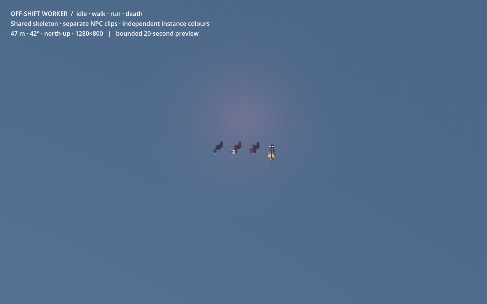
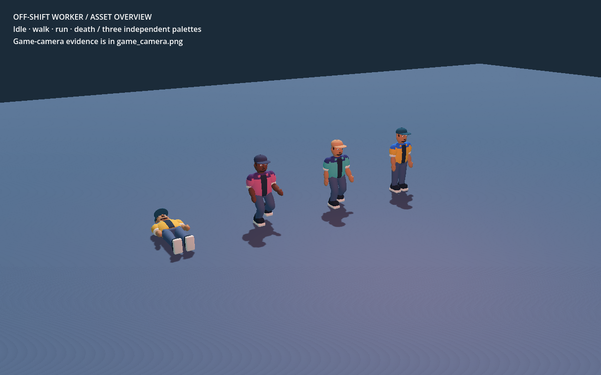

Selected reference

Generated concept is a visual reference; dimensions and animation evidence come from the authored source and native engine checks above.
Approved civilian direction, now a source-linked Blender/Godot asset. One shared 28-bone skeleton, a separate NPC clip library, and independent colours on repeated instances. Independent production review pending.
Asset handoff and checks · Original concepts
Native Godot overview. Left to right: death, run, walk, idle. Video samples at 20 fps; no performance claim. The scene keeps death's final pose.

47 m · 42° · north-up · 1280×800. At this scale the cap, shoulder colour and silhouette carry identity. This is an asset-local floor and lighting setup; city/crowd acceptance remains for integration.

Generated concept is a visual reference; dimensions and animation evidence come from the authored source and native engine checks above.